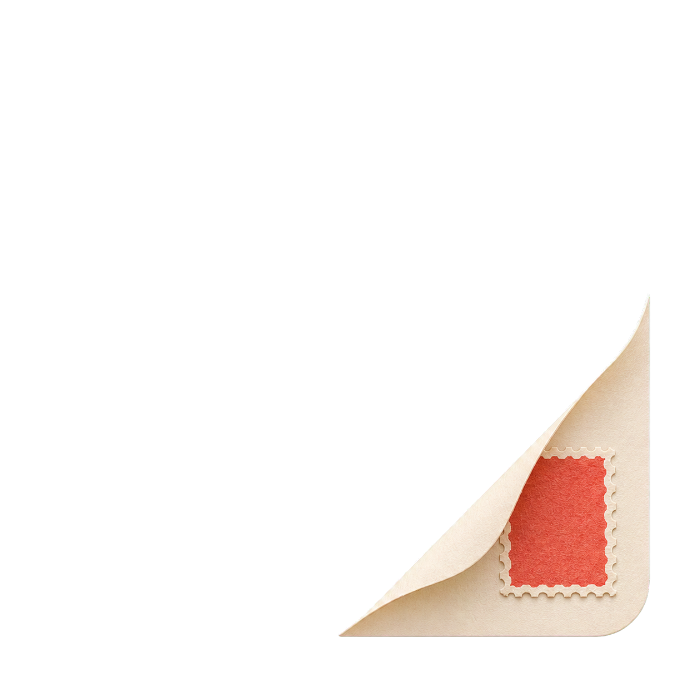
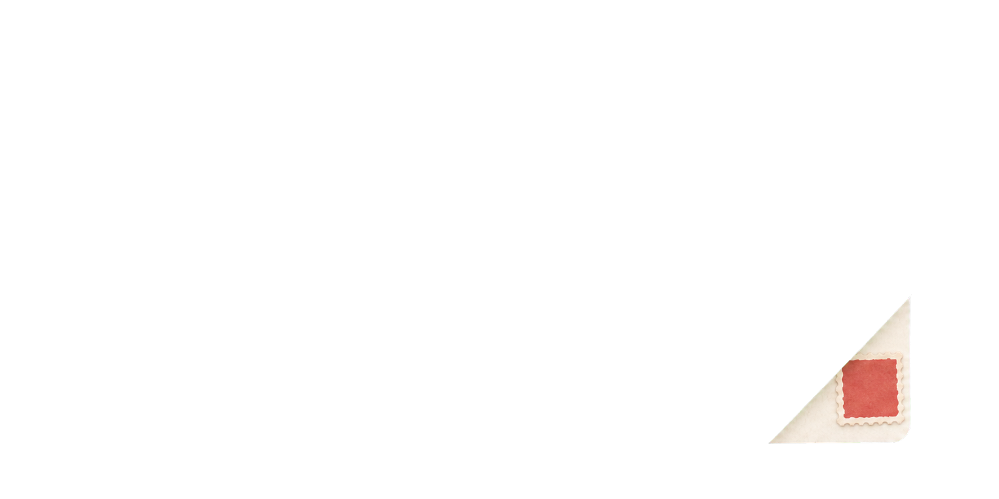
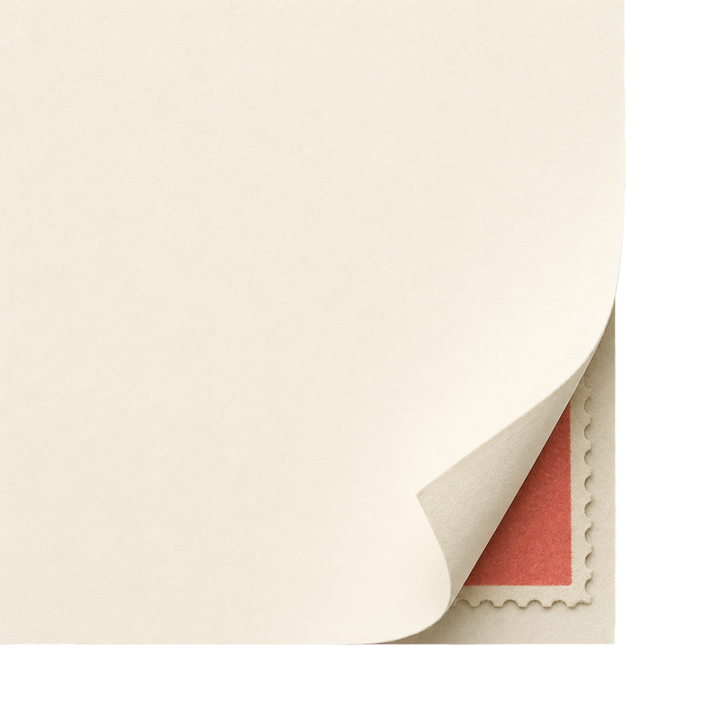
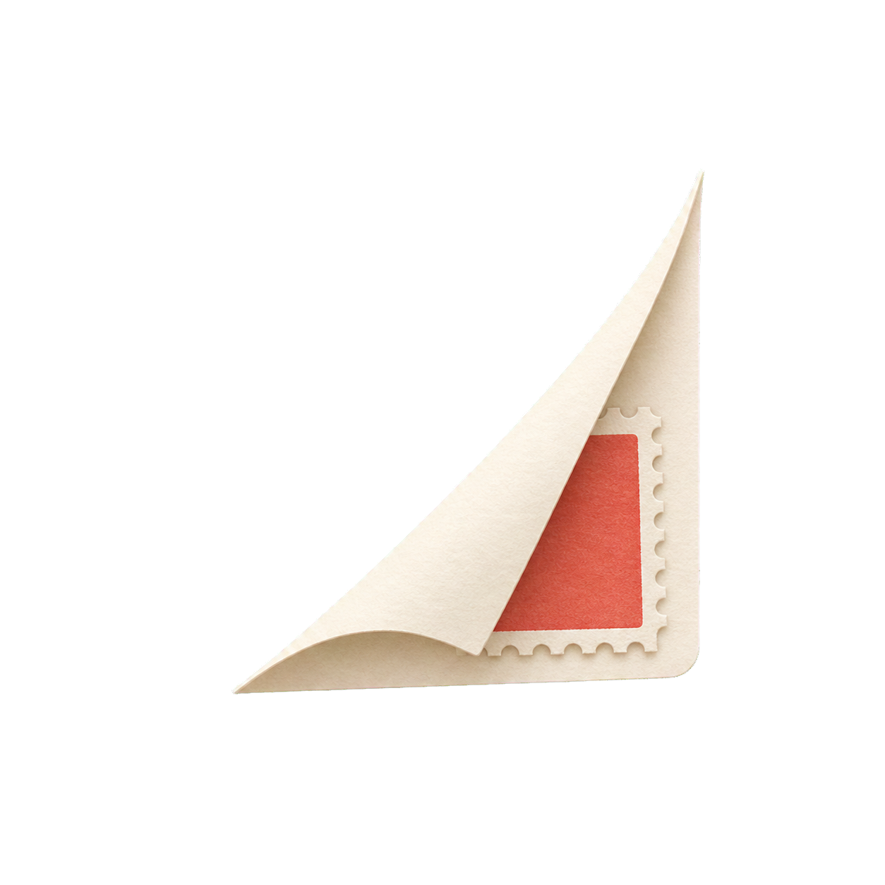

Texture Afine tooth
Warm Paper asset candidates
Production-oriented raster treatments derived from concept 05. The selected paper is deliberately quiet; the selected corner is an optional light-mode accent rather than a repeated decoration.
Paper surface
Folded corner + stamp




Dark mode recommendation: omit the paper-corner ornament. A light curl pasted onto charcoal undermines the restrained material system; a recolored version loses the physical-paper logic.